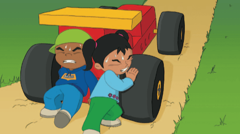
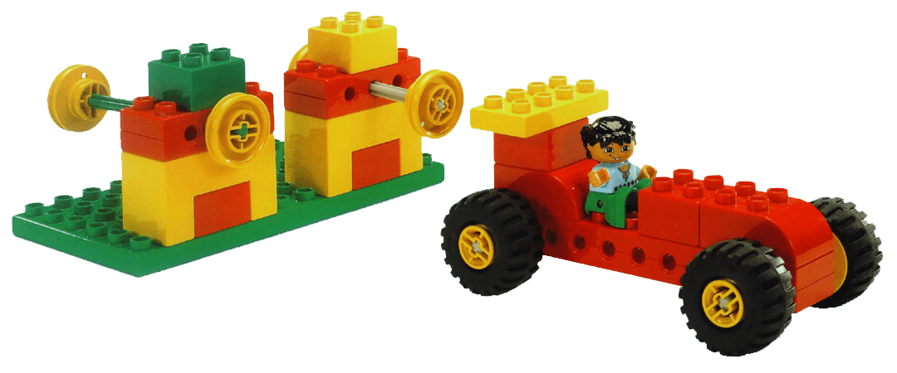
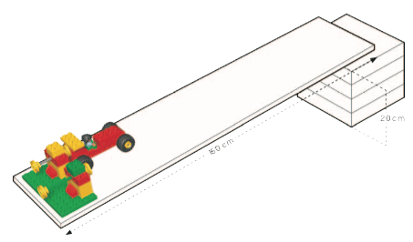
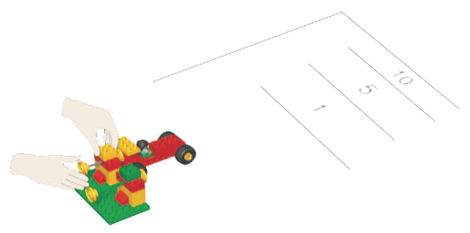

Sam y Sara están se están divertiendo mucho lanzándose colina abajo con su carro coche rápido. La colina
detrás de la casa forma una gran rampa, y es muy divertido desplazarse cuesta abajo y sentir la emoción en
el cuerpo.
Una vez que el coche se ha detenido, es difícil empujarlo de nuevo hasta arriba. Sara cree que debe haber una
forma mucho más fácil de subir el carro que empujarlo hasta arriba. A Sam le gustaría poder lanzar a Sara y
el coche cuesta arriba. ¡Sería fantástico!
¿Puedes ayudar a Sam y Sara a construir un lanzador que pueda lanzar el coche cuesta arriba por la colina?
¡Veamos cómo se hace!

• Asegúrate de que las ruedas giren libremente y no rocen contra los bordes del carro

• Coloca la plancha sobre algunos libros de modo que uno de los extremos quede situado 20 cm mas arriba que
el suelo
• Coloca el lanzador y sostenlo en la parte inferior de la rampa

Utilizando los dos lanzadores podrías enviar el coche hacia arriba por la rampa.
Averigua cuál enviará al carro más lejos.
Predice primero cual de los lanzadores enviará el carro lejos en la rampa y cuál lo enviará aún más arriba en
la rampa. Escribe tus predicciones utilizando las palabras de la hoja de trabajo.
A continuación, comprueba lo lejos que puedes lanzar el carro utilizando primero el lanzador pequeño y después
el grande. Escribe tus hallazgos utilizando las palabras de la hoja de trabajo.
El eje más largo del lanzador grande implica más tiempo para alcanzar velocidad y energía en el lanzamiento.
Mas energía implica mayor distancia.

• ¿Qué has predicho que ocurriría y por qué?
• Describe lo que ha ocurrido.
• ¿Cómo te has asegurado de que tus pruebas fueran imparciales?
¿Has empujado con la misma fuerza? ¿Has lanzado siempre desde el mismo punto?
• Describe cómo funciona el modelo.
Sugerencia:
¿Cuán cerca?
Utiliza una regla para realizar medidas estándar de la distancia que recorre el coche.
Haz un juego para ver quién puede lanzar sus carros más cerca de una pared sin que lleguen a tocarla.
¡Cuanto más cerca de la pared se detenga tu carro, más puntos conseguirás! Anota tus puntajes en la hoja de
trabajo.
¿Cómo puedes hacer el juego justo? Todos los carros son lanzados desde la misma posición de partida. Todos
los participantes tienen tres turnos. Suma los puntajes después de tres turnos, etc.